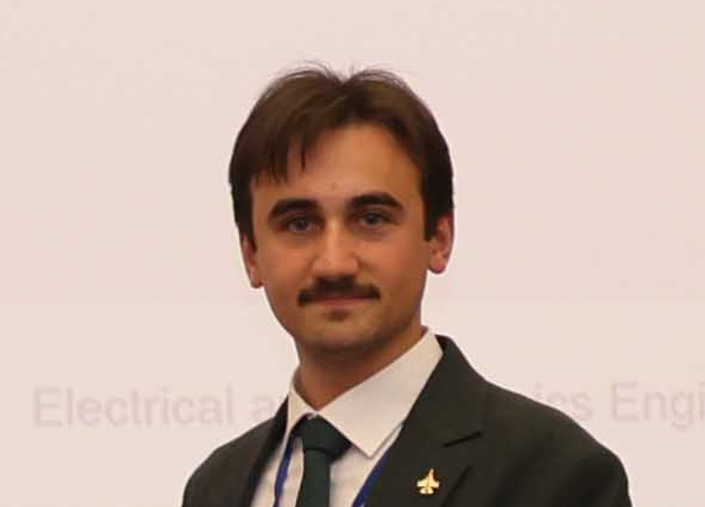

Satılmış Furkan Kahraman
Bilkent University · Ankara, Turkey
I am a M.Sc. student in Electrical and Electronics Engineering at Bilkent University, working at the National Magnetic Resonance Research Center (UMRAM). My research interests span Medical Imaging, Image Processing, Signal Processing, and Hardware Design & Implementation, with a current focus on advancing magnetic particle imaging (MPI) techniques for in vivo applications.
Education
M.Sc. in Electrical & Electronics Engineering
B.Sc. in Electrical & Electronics Engineering
Research & Experience
Sep 20244 mos
Research Intern
Simulation and design of MPI subsystems. Design and implementation of a 3D Helmholtz/Maxwell coil for magnetic sensor calibration.
InternationalPresent2 yrs 11 mos
Undergraduate Researcher
Research on advancing magnetic particle imaging (MPI) techniques for in vivo imaging using magnetic nanoparticles (MNPs). Designed and developed a magnetic particle spectrometer (MPS) for characterizing MNP magnetization response.
Sep 20232 mos
Research Intern
Magnetic field simulations and 3D design of the Magnetic Particle Spectrometer setup.
Jul 20232 mos
Intern
Laser-based distance measurement system — methodologies and algorithms for precision distance measurements.
Feb 20237 mos
Undergraduate Researcher
Research on nonlinear feedback-driven laser material interactions for laser sintering techniques.
Teaching Experience
Spring 2026
Teaching Assistant
Spring 2026
Teaching Assistant
Publications
Notable Projects
MFH-MPS Hybrid System
Combined magnetic fluid hyperthermia (MFH) and magnetic particle spectrometer (MPS) experimental platform, synchronizing AWG-driven heating with real-time temperature and MPS signal acquisition.
Focus Coil Design for Magnetic Particle Imaging
Electromagnetic design and optimization of focus/selection field coils for MPI systems, including field simulation, winding geometry, and impedance matching.
Solenoid Designer
Interactive electromagnetic coil design tool: 2D field heatmap, Smith chart impedance matching, 3D coil geometry rendering, and live analytics, all in a single-file web app.
Single-Sided MPI Depth Imaging
Depth imaging using single-sided MPI to detect skin beneath nano-gels without selection fields.
3-Axis Helmholtz Coil
Design and implementation of 3D Helmholtz coil for MPI head scanner sensor calibration.
Single-Sided MPS Device
Development of a single-sided MPS for detecting MNP response, targeting non-invasive tracking of nanogel degradation.
Autonomous Aircraft
FPGA-based drone with automatic balance, takeoff, and landing capabilities.
Honors & Awards
Skills
MATLAB Python C++ Julia VHDL Assembly SPICE
VSCode COMSOL Autodesk Lightroom